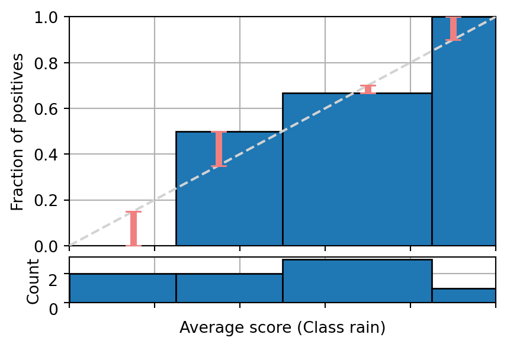
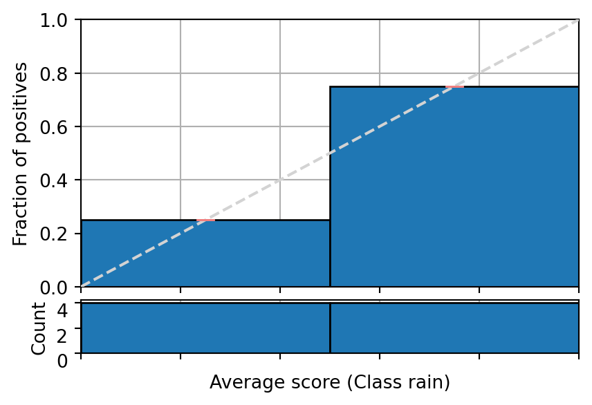
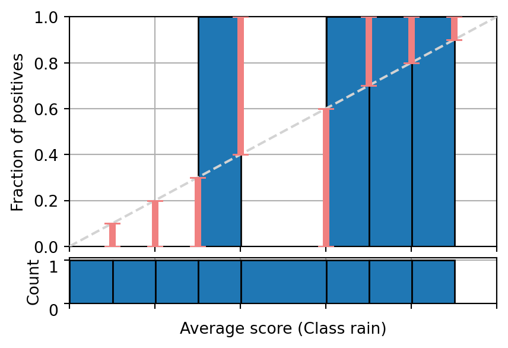
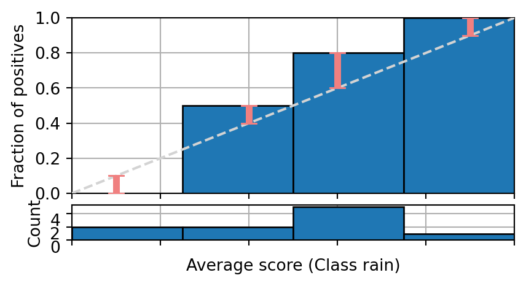
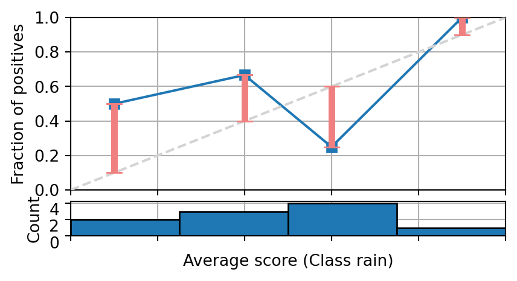
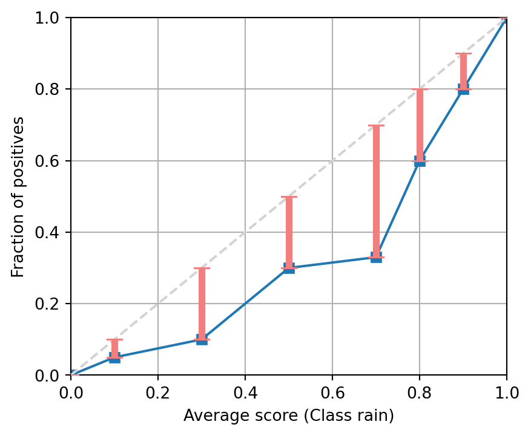
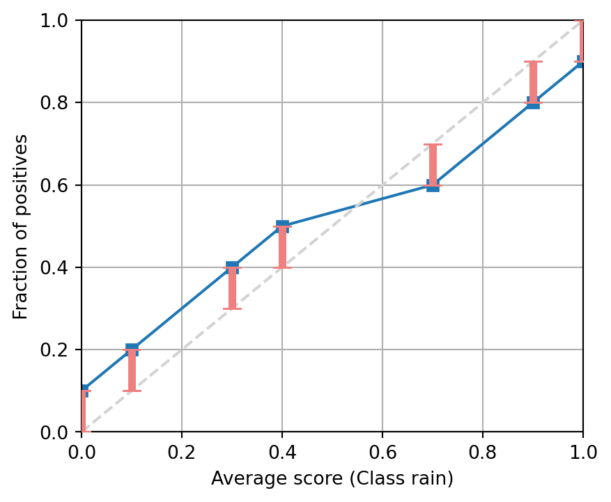
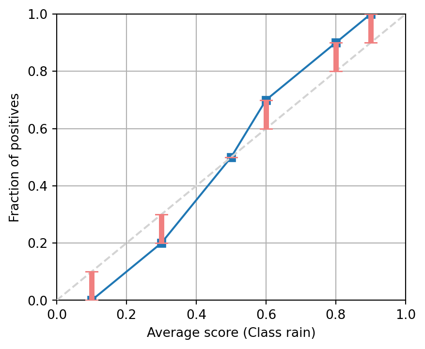

Classifier Calibration
![]()
Taking inspiration from forecasting
Weather forecasters
- Weather forecasters started thinking about calibration a long time ago (Brier 1950).
- A forecast
70% chance of rainshould be followed by rain 70% of the time.
- A forecast
- This is immediately applicable to binary classification:
- A prediction
70% chance of spamshould be spam 70% of the time.
- A prediction
- and to multi-class classification:
- A prediction
70% chance of setosa, 10% chance of versicolor and 20% chance of virginicashould be setosa/versicolor/virginica 70/10/20% of the time.
- A prediction
- In general:
- A predicted probability (vector) should match empirical (observed) probabilities.
Q: What does X% of the time mean?
It means that we expect the occurrence of an event to happen “X%” of the time.
Forecasting example
Let’s consider a small toy example:
- Two predictions of
10% chance of rainwere both followed byno rain. - Two predictions of
40% chance of rainwere once followed byno rain, and once byrain. - Three predictions of
70% chance of rainwere once followed byno rain, and twice byrain. - One prediction of
90% chance of rainwas followed byrain.
Q: Is this forecaster well-calibrated?
The evaluation of calibration requires a large number of samples to make a statement. However, in this toy example we can assume that a \(10\%\) discrepancy is acceptable, and that the number of samples is sufficient.
Over- and under-estimates
| \(\hat{p}\) | \(y\) | |
|---|---|---|
| 0 1 |
0.1 0.1 |
0 0 |
| 2 3 |
0.4 0.4 |
0 1 |
| 4 5 6 |
0.7 0.7 0.7 |
0 1 1 |
| 7 | 0.9 | 1 |
This forecaster is doing a pretty decent job:
10% chance of rainwas a slight over-estimate
(\(\bar{y} = 0/2 = 0\%\));40% chance of rainwas a slight under-estimate
(\(\bar{y} = 1/2 = 50\%\));70% chance of rainwas a slight over-estimate
(\(\bar{y} = 2/3 = 67\%\));90% chance of rainwas a slight under-estimate
(\(\bar{y} = 1/1 = 100\%\)).
Visualising forecasts: the reliability diagram
| \(\hat{p}\) | \(y\) | |
|---|---|---|
| 0 1 |
0.1 0.1 |
0 0 |
| 2 3 |
0.4 0.4 |
0 1 |
| 4 5 6 |
0.7 0.7 0.7 |
0 1 1 |
| 7 | 0.9 | 1 |
Changing the numbers slightly
| \(\hat{p}\) | \(y\) | |
|---|---|---|
| 0 1 |
0.1 0.2 |
0 0 |
| 2 3 |
0.3 0.4 |
0 1 |
| 4 5 6 |
0.6 0.7 0.8 |
0 1 1 |
| 7 | 0.9 | 1 |

Or should we group the forecasts differently?
| \(\hat{p}\) | \(y\) | |
|---|---|---|
| 0 1 2 3 |
0.1 0.2 0.3 0.4 |
0 0 0 1 |
| 4 5 6 7 |
0.6 0.7 0.8 0.9 |
0 1 1 1 |

Or not at all?
| \(\hat{p}\) | \(y\) | |
|---|---|---|
| 0 | 0.1 | 0 |
| 1 | 0.2 | 0 |
| 2 | 0.3 | 0 |
| 3 | 0.4 | 1 |
| 4 | 0.6 | 0 |
| 5 | 0.7 | 1 |
| 6 | 0.8 | 1 |
| 7 | 0.9 | 1 |

Binning or pooling predictions is a fundamental notion
We need bins to evaluate the degree of calibration:
- In order to decide whether a weather forecaster is well-calibrated, we need to look at a good number of forecasts, say over one year.
- We also need to make sure that there are a reasonable number of forecasts for separate probability values, so we can obtain reliable empirical estimates.
- Trade-off: large bins give better empirical estimates, small bins allows a more fine-grained assessment of calibration.}
But adjusting forecasts in groups also gives rise to practical calibration methods:
- empirical binning
- isotonic regression (aka ROC convex hull)
Expected calibration error affected by the number of bins
In the following example you can change the number of bins of a fixed set of samples and see how the Expected Calibration Error changes accordingly.
#| standalone: true
#| components: viewer
#| viewerHeight: 480
from utils import plot_reliability_diagram
import numpy as np
np.random.seed(42)
scores = np.random.rand(100)
labels = np.random.binomial(1, scores)
import numpy as np
from shiny import App, render, ui
app_ui = ui.page_fluid(
ui.layout_sidebar(
ui.panel_sidebar(
ui.input_slider("n", "Number of bins",
min=1, max=100, value=10),
),
ui.panel_main(
ui.output_plot("plot")
)
),
)
def server(input, output, session):
@output
@render.plot(alt="A histogram")
def plot():
fig = plot_reliability_diagram(labels, scores,
n_bins=input.n())
return fig
app = App(app_ui, server, debug=True)
## file: utils.py
import matplotlib.pyplot as plt
from mpl_toolkits.axes_grid1 import make_axes_locatable
import numpy as np
import matplotlib.ticker as mticker
def get_binned_scores(labels, scores, bins=10):
'''
Parameters
==========
labels : array (n_samples, )
Labels indicating the true class.
scores : matrix (n_samples, )
Output probability scores for one or several methods.
bins : int or list of floats
Number of bins to create in the scores' space, or list of bin
boundaries.
'''
n_bins = 1
if isinstance(bins, int):
n_bins = bins
bins = np.linspace(0, 1 + 1e-8, n_bins + 1)
elif isinstance(bins, list) or isinstance(bins, np.ndarray):
n_bins = len(bins) - 1
bins = np.array(bins)
if bins[0] == 0.0:
bins[0] = 0 - 1e-8
if bins[-1] == 1.0:
bins[-1] = 1 + 1e-8
scores = np.clip(scores, a_min=0, a_max=1)
bin_idx = np.digitize(scores, bins) - 1
bin_true = np.bincount(bin_idx, weights=labels,
minlength=n_bins)
bin_pred = np.bincount(bin_idx, weights=scores,
minlength=n_bins)
bin_total = np.bincount(bin_idx, minlength=n_bins)
zero_idx = bin_total == 0
avg_true = np.empty(bin_total.shape[0])
avg_true.fill(np.nan)
avg_true[~zero_idx] = np.divide(bin_true[~zero_idx],
bin_total[~zero_idx])
avg_pred = np.empty(bin_total.shape[0])
avg_pred.fill(np.nan)
avg_pred[~zero_idx] = np.divide(bin_pred[~zero_idx],
bin_total[~zero_idx])
return avg_true, avg_pred, bin_true, bin_total
def plot_reliability_diagram(labels, scores, n_bins=10):
bins = np.linspace(0, 1 + 1e-8, n_bins + 1)
avg_true, avg_pred, bin_true, bin_total = get_binned_scores(
labels, scores, bins=bins)
zero_idx = bin_total == 0
fig = plt.figure()
ax1 = fig.add_subplot()
fig, axs = plt.subplots(2, 1,
gridspec_kw={'height_ratios': [4, 1]})
axs[0].bar(x=bins[:-1][~zero_idx], height=avg_true[~zero_idx],
align='edge', width=(bins[1:] - bins[:-1])[~zero_idx],
edgecolor='black')
axs[0].scatter(avg_pred, avg_true)
axs[0].plot([0, 1], [0, 1], '--', color='red')
axs[0].set_xlim([0, 1])
axs[0].set_ylim([0, 1])
axs[0].set_ylabel('Fraction of positives')
axs[0].grid(True)
axs[0].set_axisbelow(True)
axs[1].hist(scores, range=(0, 1),
bins=bins,
histtype="bar",
lw=1,
edgecolor='black')
axs[1].set_xlim([0, 1])
axs[1].set_ylabel('Count')
axs[1].set_xlabel('Scores')
weights = bin_total[~zero_idx]/sum(bin_total)
ece = sum(np.abs(avg_pred - avg_true)[~zero_idx]*weights)
fig.suptitle(f'Expected Calibration Error = {ece:0.3f}')
return figQuestions and answers
Q&A 1
Question 1
A binary classifier for weather predictions produces a score of 0.1 for rain two times but it does not rain, two times 0.4 and it rains only once, five times 0.6 and it rains 80% of the times and one time 0.9 and it rains. Does the following reliability diagram show that information?
Answer: Yes
Correct. You can see that there is one bin per predicted score \(0.1, 0.4, 0.6\) and \(0.9\). Each bin contains the number of scores indicated in the smaller histogram below with 2, 2, 5 and 1 samples respectively. Finally, the height of each bin corresponds to the fraction of rains indicated in the question 0%, 50%, 80% and 100%.
Answer: No
Incorrect. Try another answer.

Q&A 2
Question 2
A binary classifier for weather predictions produces a score of 0.1 for rain two times and it rains once, three times 0.4 and it rains two times, four times 0.6 and it rains once and one time 0.9 and it rains. Does the following reliability diagram show that information?
Answer: Yes
Correct. You can see that there is one bin per predicted score \(0.1, 0.4, 0.6\) and 0.9. Each bin contains the number of scores indicated in the smaller histogram below with 2, 3, 4 and 1 samples respectively. Finally, the height of each bin corresponds to the fraction of rains indicated in the question 50%, 66.6%, 25% and 100%.
Answer: No
Incorrect. Try another answer.

Q&A 3
Question 3
Do we need multiple instances in each bin in order to visualise a reliability diagram?
Answer: Yes
Incorrect. Try another answer.
Answer: No
Correct. It is not necessary to have multiple instances in each bin for visualisation purposes. However, the lack of information does not allow us to know if the model is calibrated for those scores.
Q&A 4
Question 4
The following figure shows the reliability diagram of a binary classifier on enough samples to be statistically significant. Is the model calibrated, producing under-estimates or over-estimates?
Answer: Over-estimates
Incorrect. Try another answer.
Answer: Under-estimates
Correct. For each predicted score the actual fraction of positives is higher.

Q&A 5
Question 5
The following figure shows the reliability diagram of a binary classifier on enough samples to be statistically significant. Is the model calibrated, producing under-estimates or over-estimates?
Answer: Over-estimates
Correct. For each predicted score the actual fraction of positives is lower.
Answer: Under-estimates
Incorrect. Try another answer.

Why are we interested in calibration?
Why are we interested in calibration?
To calibrate means to employ a known scale with known properties.
- E.g., additive scale with a well-defined zero, so that ratios are meaningful.
For classifiers we want to use the probability scale, so that we can
- justifiably use default decision rules (e.g., maximum posterior probability);
- adjust these decision rules in a straightforward way to account for different class priors or misclassification costs;
- combine probability estimates in a well-founded way.
Q: Is the probability scale additive?
In some situations we may want to sum probabilities, for example if we have a set of mutually exclusive events, the probability of at least one of them happening can be computed by their sum. In other situations the product of probabilities is used, e.g. the probability of two independent events happening at the same time.
Q: How would you combine probability estimates from several well-calibrated models?
Check some online information e.g. When pooling forecasts, use the geometric mean of odds
And the following code shows some examples.
| Probabilities | Arithmetic mean | Geometric mean | Harmonic mean |
|---|---|---|---|
| [0.1 0.1] | 0.1 | 0.1 | 0.1 |
| [0.5 0.5] | 0.5 | 0.5 | 0.5 |
| [0.1 0.9] | 0.5 | 0.5 | 0.18 |
| [0.1 0.1 0.9] | 0.37 | 0.32 | 0.14 |
| [0.1 0.1 0.99] | 0.4 | 0.52 | 0.14 |
| [0.1 0.1 0.999] | 0.4 | 0.7 | 0.14 |
Optimal decisions I
Denote the cost of predicting class \(j\) for an instance of true class \(i\) as \(C(\hat{Y}=j|Y=i)\). The expected cost of predicting class \(j\) for instance \(x\) is
\[ C(\hat{Y}=j|X=x) = \sum_i P(Y=i|X=x)C(\hat{Y}=j|Y=i) \]
where \(P(Y=i|X=x)\) is the probability of instance \(x\) having true class \(i\) (as would be given by the Bayes-optimal classifier).
The optimal decision is then to predict the class with lowest expected cost:
\[ \hat{Y}^* = \mathop{\mathrm{arg\,min}}_j C(\hat{Y}=j|X=x) = \mathop{\mathrm{arg\,min}}_j \sum_i P(Y=i|X=x)C(\hat{Y}=j|Y=i) \]
Optimal decisions II
In binary classification we have:
\[\begin{align*} C(\hat{Y}=+|X=x) &= P(+|x)C(+|+) + \big(1-P(+|x)\big)C(+|-) \\ C(\hat{Y}=-|X=x) &= P(+|x)C(-|+) + \big(1-P(+|x)\big)C(-|-) \end{align*}\]
On the optimal decision boundary these two expected costs are equal, which gives
\[\begin{align*}%\label{eq::cost-threshold} P(+|x) = \frac{\color{blue}{C(+|-)-C(-|-)}}{\color{blue}{C(+|-)-C(-|-)}+\color{red}{C(-|+)-C(+|+)}} \triangleq c \end{align*}\]
This gives the optimal threshold on the hypothetical Bayes-optimal probabilities.
It is also the best thing to do in practice – as long as the probabilities are well-calibrated!
Optimal decisions III
Without loss of generality we can set the cost of true positives and true negatives to zero; \(c = \frac{c_{\text{FP}}}{c_{\text{FP}} + c_{\text{FN}}}\) is then the cost of a false positive in proportion to the combined cost of one false positive and one false negative.
- E.g., if false positives are 4 times as costly as false negatives then we set the decision threshold to \(4/(4+1)=0.8\) in order to only make positive predictions if we’re pretty certain.
Similar reasoning applies to changes in class priors:
- if we trained on balanced classes but want to deploy with 4 times as many positives compared to negatives, we lower the decision threshold to \(0.2\);
- more generally, if we trained for class ratio \(r\) and deploy for class ratio \(r'\) we set the decision threshold to \(r/(r+r')\).
Cost and class prior changes can be combined in the obvious way.
Questions and answers
Q&A 1
Question 1
Is it possible to compute optimal risks given a cost matrix and a probabilistic classifier that is not calibrated?
Answer: Yes
Incorrect. Try another answer.
Answer: No
Correct.
Q&A 2
Question
Given a calibrated probabilistic classifier, is it optimal to select the class with the highest predicted probability?
Answer: Yes
Incorrect. Try another answer.
Answer: No
Correct.
Question
If we have the following cost matrix, and a model outputs 0.6 probability for class 1. What would be the expected cost of predicting class 2?
| Predicted Class 1 | Predicted Class 2 | |
|---|---|---|
| True Class 1 | -1 | 4 |
| True Class 2 | 2 | -2 |
Answer: 0.4
Incorrect. Try another answer.
Answer: -0.4
Incorrect. Try another answer.
Answer: 1.6
Correct. \(4*0.6 - 2*0.4\)
Question
What would be the expected cost of predicting class 1?
Answer: 0.4
Incorrect. Try another answer.
Answer: -0.4
Correct. \(-1*0.6 + 2*0.4\)
Answer: 1.6
Incorrect. Try another answer.
Common sources of miscalibration
Common sources of miscalibration
- Underconfidence:
-
a classifier thinks it’s worse at separating classes than it actually is.
- Hence we need to pull predicted probabilities away from the centre.
- Overconfidence:
-
a classifier thinks it’s better at separating classes than it actually is.
- Hence we need to push predicted probabilities toward the centre.
A classifier can be overconfident for one class and underconfident for the other, in which case all predicted probabilities need to be increased or decreased.
Underconfidence example
- Underconfidence typically gives sigmoidal distortions.
- To calibrate these means to pull predicted probabilities away from the centre.

Source: (Niculescu-Mizil and Caruana 2005)
Overconfidence example
- Overconfidence is very common, and usually a consequence of over-counting evidence.
- Here, distortions are inverse-sigmoidal
- Calibrating these means to push predicted probabilities toward the centre.

Source: (Niculescu-Mizil and Caruana 2005)
Why fitting the distortions helps with calibration
In clockwise direction, the dotted arrows show:
- using a point’s uncalibrated score on the \(x\)-axis as input to the calibration map,
- mapping the resulting output back to the diagonal, and
- combine with the empirical probability of the point we started from.
The closer the original point is to the fitted calibration map, the closer the calibrated point (in red) will be to the diagonal.

Questions and answers
Q&A 1
Question
The following figures show the reliability diagram of several binary classifiers. Assuming that there are enough samples on each bin, indicate if the model seems calibrated, over-confident or under-confident.
Answer: Calibrated.
Incorrect. Try another answer.
Answer: Over-confident.
Correct.
Answer: Under-confident.
Incorrect. Try another answer.

Q&A 2
Answer: Calibrated.
Correct.
Answer: Over-confident.
Incorrect. Try another answer.
Answer: Under-confident.
Incorrect. Try another answer.

Q&A 3
Answer: Calibrated.
Incorrect. Try another answer.
Answer: Over-confident.
Incorrect. Try another answer.
Answer: Under-confident.
Correct.

Q&A 4
Question
Can a binary classifier show a calibrated reliability diagram with a number of equally distributed bins, and a non-calibrated one with a higher number of equally distributed bins?
Answer: Yes.
Correct.
Answer: No.
Incorrect. Try another answer.
A first look at some calibration techniques
A first look at some calibration techniques
- Parametric calibration involves modelling the score distributions within each class. \
- Platt scaling = Logistic calibration can be derived by assuming that the scores within both classes are normally distributed with the same variance (Platt 2000).
- Beta calibration employs Beta distributions instead, to deal with scores already on a \([0,1]\) scale (Kull, Silva Filho, and Flach 2017).
- Dirichlet calibration for more than two classes (Kull et al. 2019).
- Non-parametric calibration often ignores scores and employs ranks instead. \
- E.g., isotonic regression = pool adjacent violators = ROC convex hull (Zadrozny and Elkan 2001) (Fawcett and Niculescu-Mizil 2007).
Platt scaling

\[\begin{align*} p(s; w, m) &= \frac{1}{1+\exp(-w(s-m))}\\ w &= (\mu_{\textit{pos}}-\mu_{\textit{neg}})/\sigma^2, m = (\mu_{\textit{pos}}+\mu_{\textit{neg}})/2 \end{align*}\]
Beta calibration

\[\begin{align*} p(s; a, b, c) &= \frac{1}{1+\exp(-a \ln s - b \ln (1-s) - c)} \\ a &= \alpha_{\textit{pos}}-\alpha_{\textit{neg}}, b = \beta_{\textit{neg}}-\beta_{\textit{pos}} \end{align*}\]
Isotonic regression


Questions and answers
Question
Can a binary classifier show a calibrated reliability diagram with a number of equally distributed bins, and a non-calibrated one with a higher number of equally distributed bins?
Answer: What is a calibration map?
It is a mapping between the scores to be calibrated and the objective probabilities.
Platt scaling:
Can Platt scaling calibrate probabilistic models that are overconfident?
Answer: Yes.
Incorrect. Try another answer.
Answer: No.
Correct. Platt scaling for probability scores can only generate S shaped calibration maps, which can only calibrate under-confident scores.
Isotonic regression:
Is isotonic regression a parametric method?
Answer: Yes.
Incorrect. Try another answer.
Answer: No.
Correct.
Platt scaling:
Can Platt scaling learn an identity function if the model is already calibrated?
Answer: Yes.
Incorrect. Try another answer.
Answer: No.
Correct. Platt scaling can only learn S shaped functions, and the identity function requires a straight line.
Calibrating multi-class classifiers
What’s so special about multi-class calibration?
Similar to classification, some methods are inherently multi-class but most are not.
This leads to (at least) three different ways of defining what it means to be fully multiclass-calibrated. - Many recent papers use the (weak) notion of confidence calibration.
Evaluating multi-class calibration is in its full generality still an open problem.
Definitions of calibration for more than two classes
The following definitions of calibration are equivalent for binary classification but increasingly stronger for more than two classes:
- Confidence calibration: only consider the highest predicted probability.
- Class-wise calibration: only consider marginal probabilities.
- Multi-class calibration: consider the entire vector of predicted probabilities.
Confidence calibration
This was proposed by Guo et al. (2017), requiring that among all instances where the probability of the most likely class is predicted to be \(c\), the expected accuracy is \(c\). (We call this `confidence calibration’ to distinguish it from the stronger notions of calibration.)
Formally, a probabilistic classifier \(\mathbf{\hat{p}}:\mathcal{X}\to\Delta_{k}\) is confidence-calibrated, if for any confidence level \(c\in[0,1]\), the actual proportion of the predicted class, among all possible instances \(\mathbf{x}\) being predicted this class with confidence \(c\), is equal to \(c\):
\[\begin{align*} P(Y=i \: | \: \hat{p}_i(\mathbf{x})=c)=c\qquad\text{where }\ i=\mathop{\mathrm{arg\,max}}_j \hat{p}_j(\mathbf{x}). %P\Big(Y=\argmax\big(\vph(X)\big) \: \Big| \: \max\big(\vph(X)\big)=c\Big)=c. \end{align*}\]
Class-wise calibration
Originally proposed by Zadrozny and Elkan (2002), this requires that all one-vs-rest probability estimators obtained from the original multiclass model are calibrated.
Formally, a probabilistic classifier \(\mathbf{\hat{p}}:\mathcal{X}\to\Delta_{k}\) is classwise-calibrated, if for any class \(i\) and any predicted probability \(q_i\) for this class, the actual proportion of class \(i\), among all possible instances \(\mathbf{x}\) getting the same prediction \(\hat{p}_i(\mathbf{x})=q_i\), is equal to \(q_i\):
\[\begin{align*} P(Y=i\mid \hat{p}_i(\mathbf{x})=q_i)=q_i\qquad\text{for }\ i=1,\dots,k. \end{align*}\]
Multi-class calibration
This is the strongest form of calibration for multiple classes, subsuming the previous two definitions.
A probabilistic classifier \(\mathbf{\hat{p}}:\mathcal{X}\to\Delta_{k}\) is multiclass-calibrated if for any prediction vector \(\mathbf{q}=(q_1,\dots,q_k)\in\Delta_{k}\), the proportions of classes among all possible instances \(\mathbf{x}\) getting the same prediction \(\mathbf{\hat{p}}(\mathbf{x})=\mathbf{q}\) are equal to the prediction vector \(\mathbf{q}\):
\[\begin{align*} %\label{eq:calib}
P(Y=i\mid \mathbf{\hat{p}}(\mathbf{x})=\mathbf{q})=q_i\qquad\text{for }\ i=1,\dots,k.
\end{align*}\]
Reminder: binning needed
For practical purposes, the conditions in these definitions need to be relaxed. This is where binning comes in.
Once we have the bins, we can draw a reliability diagram as in the two-class case. For class-wise calibration, we can show per-class reliability diagrams or a single averaged one.
The degree of calibration is assessed using the gaps in the reliability diagram. All of this will be elaborated in the next part of the tutorial.
Important points to remember
- Only well-calibrated probability estimates are worthy to be called probabilities: otherwise they are just scores that happen to be in the \([0,1]\) range.
- Binning will be required in some form: instance-based probability evaluation metrics such as Brier score or log-loss always measure calibration plus something else.
- In multi-class settings, think carefully about which form of calibration you need: e.g., confidence-calibration is too weak in a cost-sensitive setting.
Questions and answers
Model scores:
Can we interpret the output of any model that produces values between zero and one as probabilities?
Answer: Yes.
Incorrect. Try another answer.
Answer: No.
Correct. Some models have been trained to generate values in any arbitrary range, but this does not mean that the model is predicting actual probabilities.
Question
Is there only one way to measure calibration for multiclass probability scores.
Answer: Yes.
Incorrect. Try another answer.
Answer: No.
Correct. There are multiple measures of calibration.
Question
Can we perform optimal decisions in a multiclass setting by knowing the highest probability among the classes and the misclassification costs?
Answer: Yes.
Incorrect. Try another answer.
Answer: No.
Correct. We need the probabilities of every class in order to make an optimal decision.
Question
If the data distribution, operating conditions and the missclassification costs do not change from training to test set, and a model makes optimal predictions in the training set. Do we need the exact probabilities in the test set to make optimal decisions?
Answer: Yes.
Incorrect. Try another answer.
Answer: No.
Correct.
References
Brier, Glenn W. 1950. “Verification of forecasts expressed in terms of probabilities.” Monthly Weather Review 78 (1): 1–3.
Fawcett, Tom, and Alexandru Niculescu-Mizil. 2007. “PAV and the ROC convex hull.” Machine Learning 68 (1): 97–106.
Flach, Peter A. 2016. “ROC Analysis.” In Encyclopedia of Machine Learning and Data Mining. Springer.
Guo, Chuan, Geoff Pleiss, Yu Sun, and Kilian Q Weinberger. 2017. “On Calibration of Modern Neural Networks.” In 34th International Conference on Machine Learning, 1321–30.
Kull, Meelis, Miquel Perello-Nieto, Markus Kängsepp, Telmo Silva Filho, Hao Song, and Peter Flach. 2019. “Beyond temperature scaling: Obtaining well-calibrated multiclass probabilities with Dirichlet calibration.” In Advances in Neural Information Processing Systems (NIPS’19), 12316–26.
Kull, Meelis, Telmo M. Silva Filho, and Peter Flach. 2017. “Beyond Sigmoids: How to obtain well-calibrated probabilities from binary classifiers with beta calibration.” Electronic Journal of Statistics 11 (2): 5052–80.
Niculescu-Mizil, Alexandru, and Rich Caruana. 2005. “Predicting good probabilities with supervised learning.” In 22nd International Conference on Machine Learning (ICML’05), 625–32. ACM Press.
Platt, JC. 2000. “Probabilities for SV Machines.” In Advances in Large-Margin Classifiers, edited by Alexander J. Smola, Peter Bartlett, Bernhard Schölkopf, and Dale Schuurmans, 61—–74. MIT Press.
Zadrozny, Bianca, and Charles Elkan. 2001. “Obtaining calibrated probability estimates from decision trees and naive Bayesian classifiers.” In 18th International Conference on Machine Learning (ICML’01), 609—–616.
———. 2002. “Transforming Classifier Scores into Accurate Multiclass Probability Estimates.” In 8th ACM SIGKDD International Conference on Knowledge Discovery and Data Mining - KDD ’02, 694—–699. ACM Press.